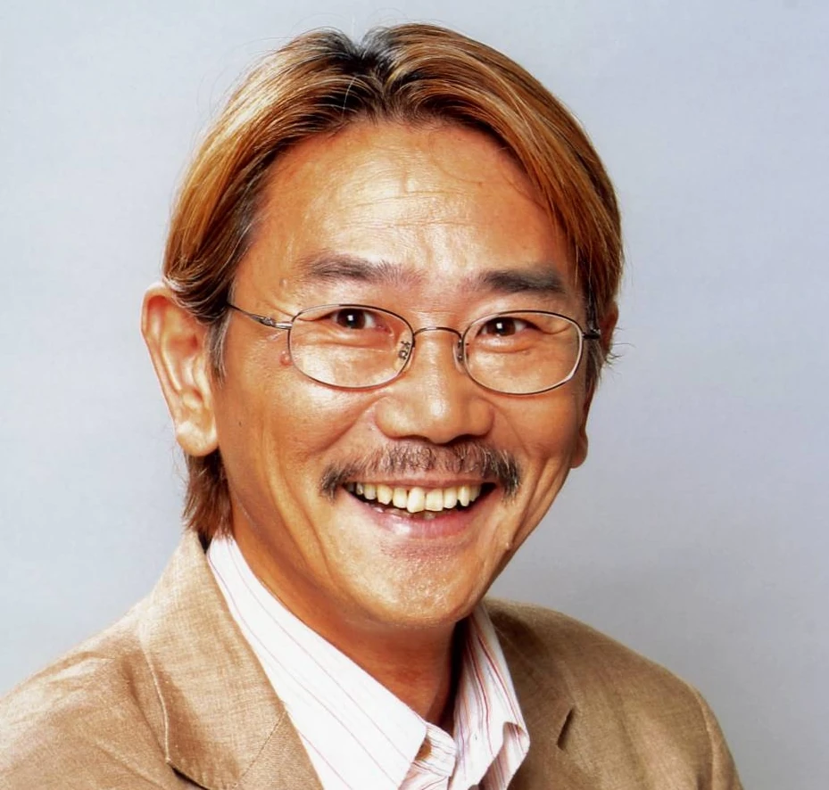

DIO
Takehito Koyasu

Personagem: Jotaro Kujo
Dublador: Daisuke Ono
Joseph Joestar
Unshō Ishizuka
Muhammad Avdol
Kenta Miyake
Noriaki Kakyoin
Daisuke Hirakawa
Jean Pierre Polnareff
Fuminori Komatsu
Iggy
Shigeru Chiba / Misato Fukuen
DIO
Takehito Koyasu
Holly Kujo
Reiko Takagi
Enya the Hag
Mami Koyama
Vanilla Ice
Ryōtarō Okiayu
Hol Horse
Hidenobu Kiuchi
Jotaro Kujo
Léo Rabelo
Joseph Joestar
Guilherme Briggs

Muhammad Avdol
Wellington Lima

Noriaki Kakyoin
Caio Freire
Jean Pierre Polnareff
Danilo Diniz
Iggy
Tatiane Keplmair
DIO
Francisco Junior

Holly Kujo
Raquel Elaine
Enya
Carmen Sheila
Hol Horse
Daniel Figueira